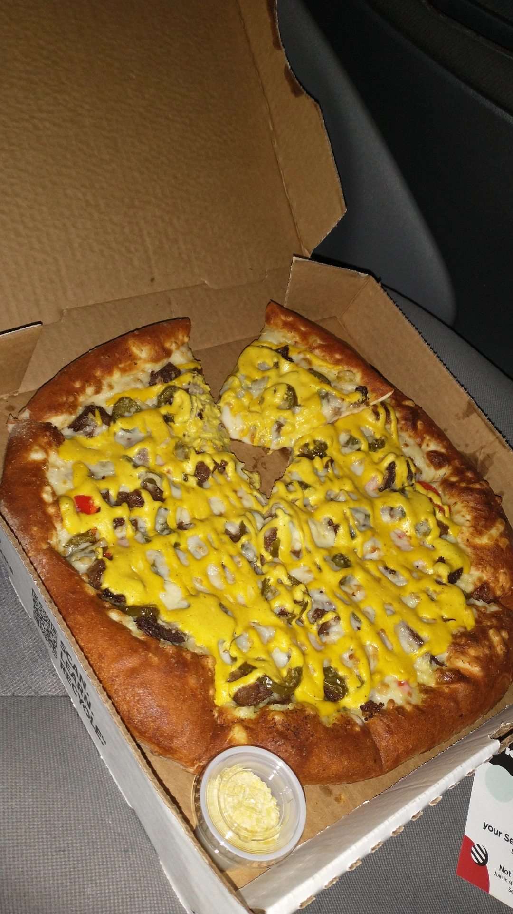

Nacho Pizza!

Description :3
The nacho pizza is a delicious 20-ish dollar vegan pizza that can be purchased from
a pizza place called "The Original Pizza Presto". It is
very yummy and you should
definitely go there to order one.
Ingredients :0
I actually don't know the ingredients necessary to create this because y'know, I
bought it:
- Some dough and whatnot
- A garlic base instead of classic marinara sauce
- Nacho cheese and whatever else is on there (idk look at the picture man)
Steps :8
Okay, I don't know why you're asking for the steps when I already told you that I
didn't make it, but whatever:
- Call "The Original Pizza Presto" and order a nacho pizza
- Look up "The Original Pizza Presto" on your phone's GPS app
- Hopefully arrive at the pizza parlor unharmed and pick up your yummy pie
- Attempt to drive home without eating a slice (very difficult)
- Arrive home and devour your nacho pizza without remorse!